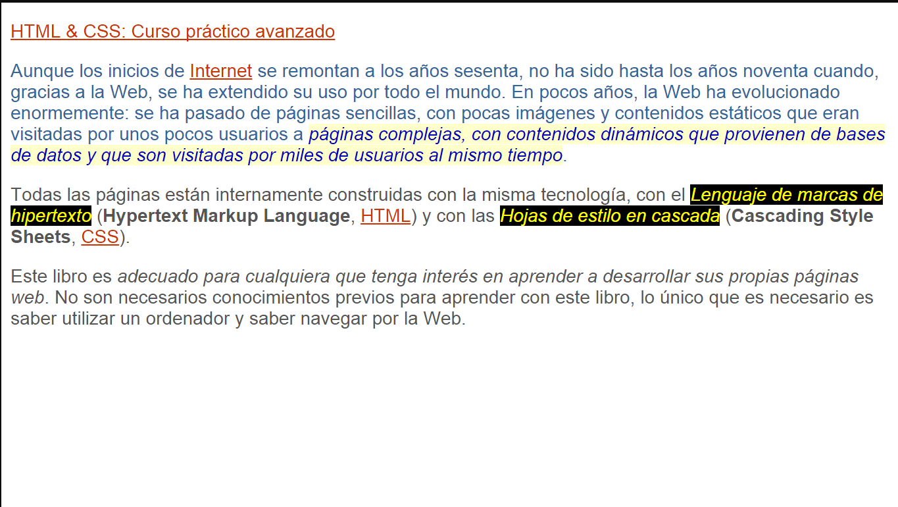
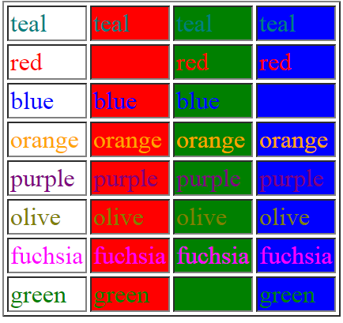

A partir de la página web que se te proporciona, debes añadir los selectores a las reglas CSS para aplicar los estilos deseados y crear una página web que tenga el mismo aspecto que la siguiente imagen:

Cada regla CSS incluye un comentario en el que se explica los elementos a los que debe aplicarse.
A partir de la página web que se te proporciona, debes escribir las reglas CSS necesarias para lograr una página web que tenga el mismo aspecto que la siguiente imagen:

Puedes modificar el código HTML proporcionado para añadir los identificadores y clases que necesites.
En la tabla se indican los nombres de los colores que debes emplear.
Debes intentar utilizar el mínimo número posible de reglas y selectores de CSS..
A partir de la página web que se te proporciona, debes escribir las reglas CSS necesarias para lograr una página web que tenga el siguiente funcionamiento:
Consejo: el orden de escritura de las reglas influye en el resultado final, ya que un enlace puede estar en varios estados al mismo tiempo.